Freiwilliges ökologisches Jahr
Abwechslungsreiche, tier- und naturverbundene Arbeit?
Du möchtest Dich ausprobieren, neues Lernen und weg von der Schulbank? Dann bewirb Dich bei uns für ein freiwilliges ökologisches Jahr!
Mehr zum FÖJ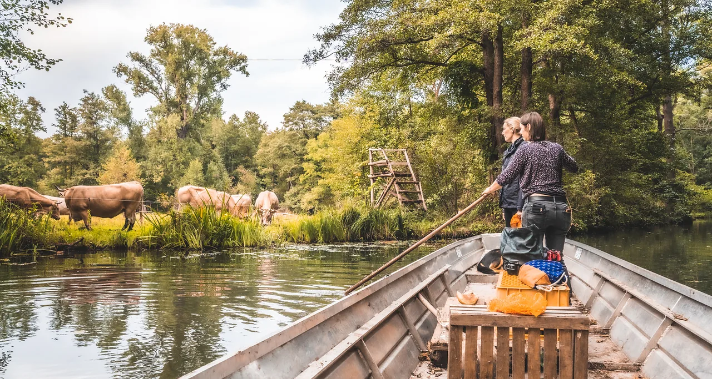
Lehde · Spreewald
Eine Insel im Spreewald, seit fünf Generationen in Familienhand – wo Mensch, Tier und Maschine noch mit dem Kahn reisen.
Willkommen
Willkommen auf unserem familienbetriebenen Mutschenhof. Ein Hof mit besonderer Note für Naturliebhaber, Wasserfreunde und Entdecker.
Der Mutschenhof wird bereits in fünfter Generation von der Familie Kilka bewirtschaftet. Seit 2009 wird der Hof von Sebastian und Anja Kilka mit viel Leidenschaft und Herzblut geführt – immer freudig unterstützt von ihren vier Kindern.
Die alten Traditionen und Werte sind geblieben. Mensch, Tier und Maschine werden immer noch wie vor hundert Jahren mit dem Kahn transportiert und auch der Heuschober findet jedes Jahr wieder einen Platz auf dem Hof.
Aber auch wir haben uns weiterentwickelt und so ist es uns ein großes Anliegen geworden, die einzigartige Natur-, und Kulturlandschaft des Spreewalds zu erhalten und unseren Tieren ein würdevolles sowie artgerechtes Leben zu bieten.
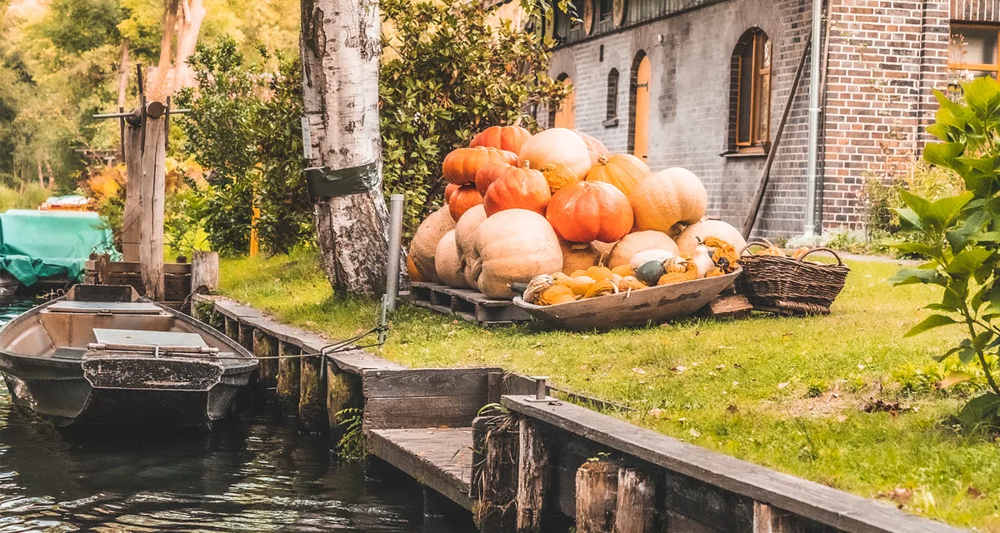
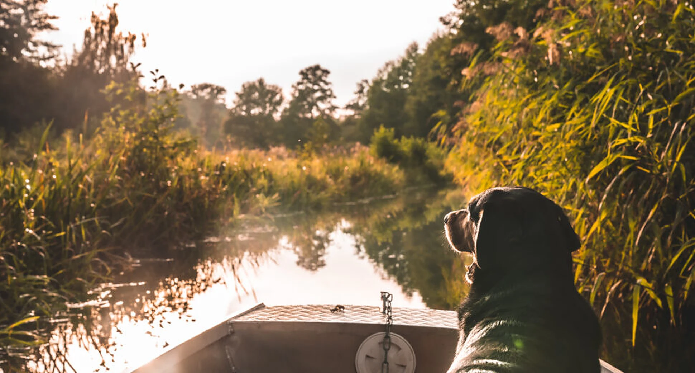
Auf dem Hof
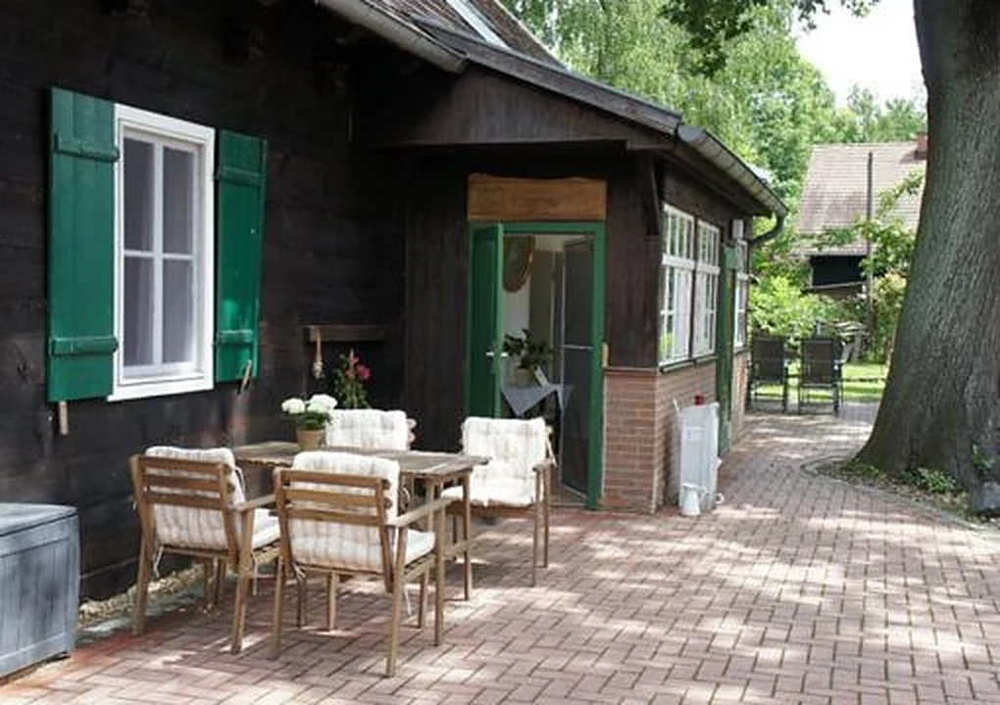
Unsere Traumferien-Wohnungen mitten im Spreewald.
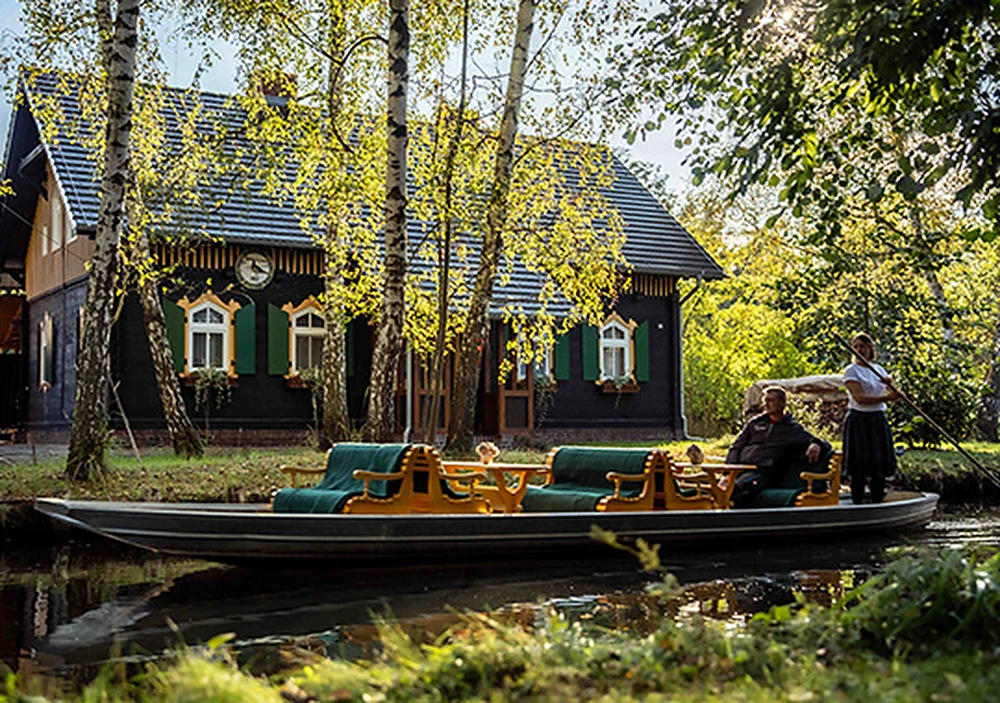
Individuell gestaltbar, ab zwei Personen buchbar.
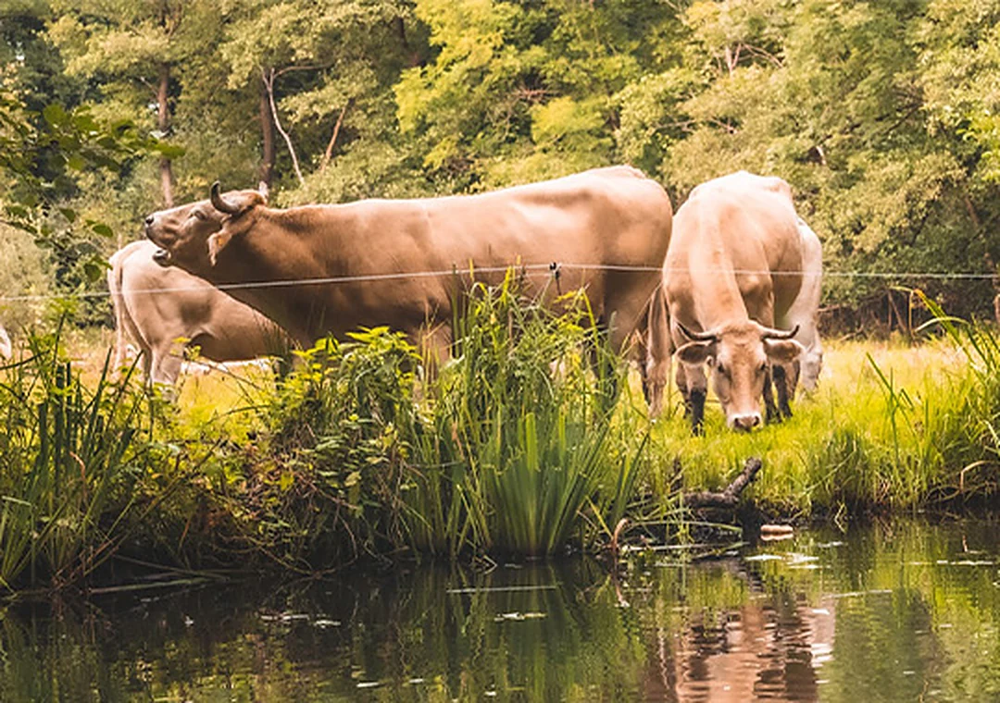
Rinder, Schweine, Hühner – und der Rest der Hofbande.
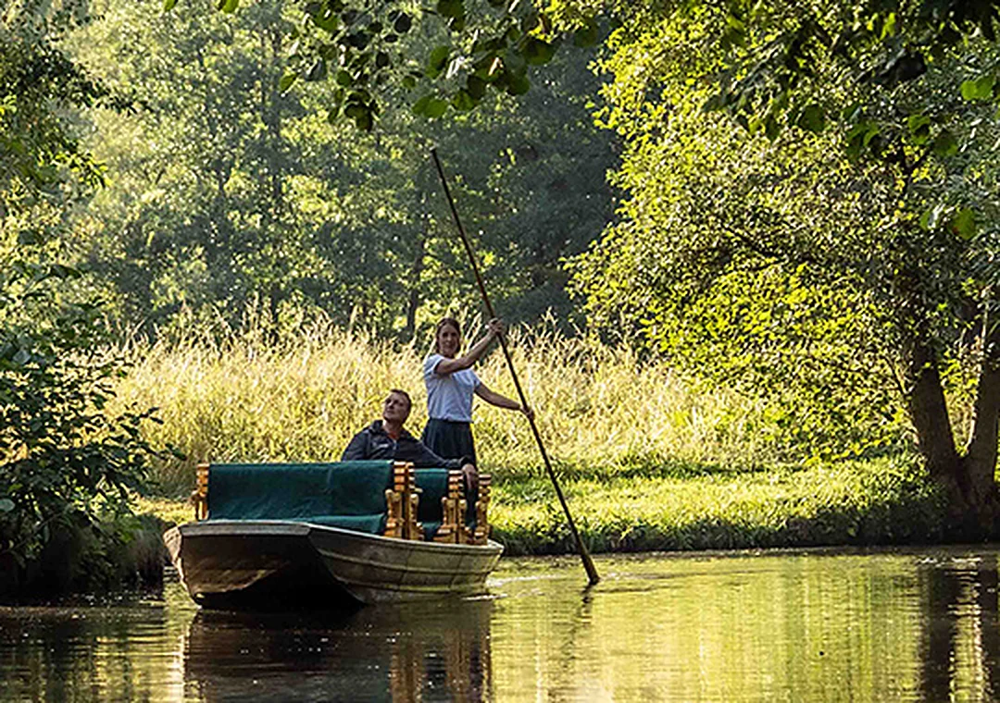
Zu Äckern und Wiesen geht es mit dem Kahn, wie vor hundert Jahren.
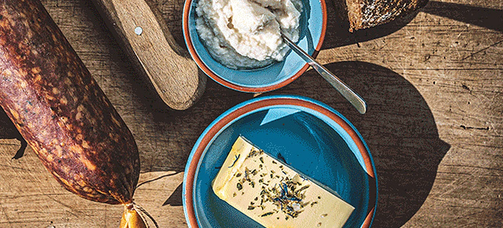
Spreewälder Rindfleisch aus der hofeigenen Schlachtung.
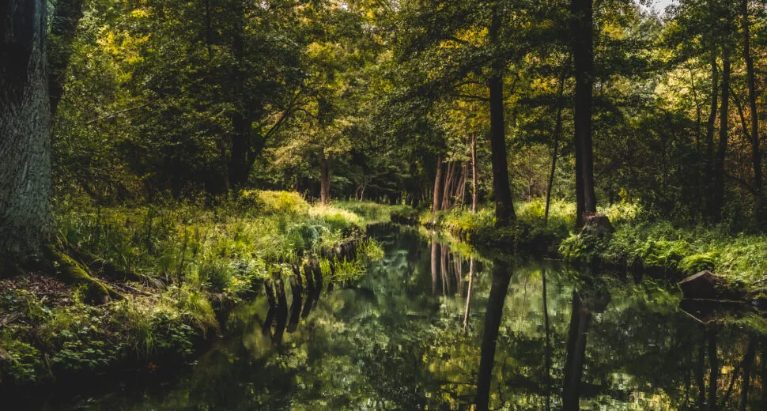
Ausflugstipps rund um Lehde und Lübbenau.
Der Hof im Jahreslauf
„Kurz gesagt, unsere Arbeit richtet sich nach dem Spreewald.“
Im Staubereich Lehde sinkt das Wasser. Je nach Wetterlage geht es ab Ende April auf die Ackerflächen – alle Geräte reisen mit dem Kahn.
Die Rinderherde beweidet die Wiesen. Nur im Frühling darf der größte Bulle die Damen beglücken – und schenkt uns Nachwuchs.
Mähen und Pressen bestimmen die Tage. Mit einer Fuhre fahren bis zu 7 Heuballen im Kahn auf die Insel.
Auch die Ernte reist per Kahn. Wenn er randvoll mit Kartoffeln über die Spree fährt, gibt es erstaunte Blicke von den Touristen.
Die Spree wird angestaut, die Wiesen stehen unter Wasser. Die Rinder fahren in Dreiergruppen mit dem Kahn zum Hof auf die Koppel.
Ohne Kahn kommt niemand auf die Flächen. Dann ruht alles, bis die Fließe wieder frei sind.
Kahnfahrten
Von hier aus beginnen unsere Kahnfahrten durch ein Labyrinth aus Fließen, Wiesen und uralten Bäumen.
ab 105 €pro Stunde · bereits ab zwei Personen buchbar
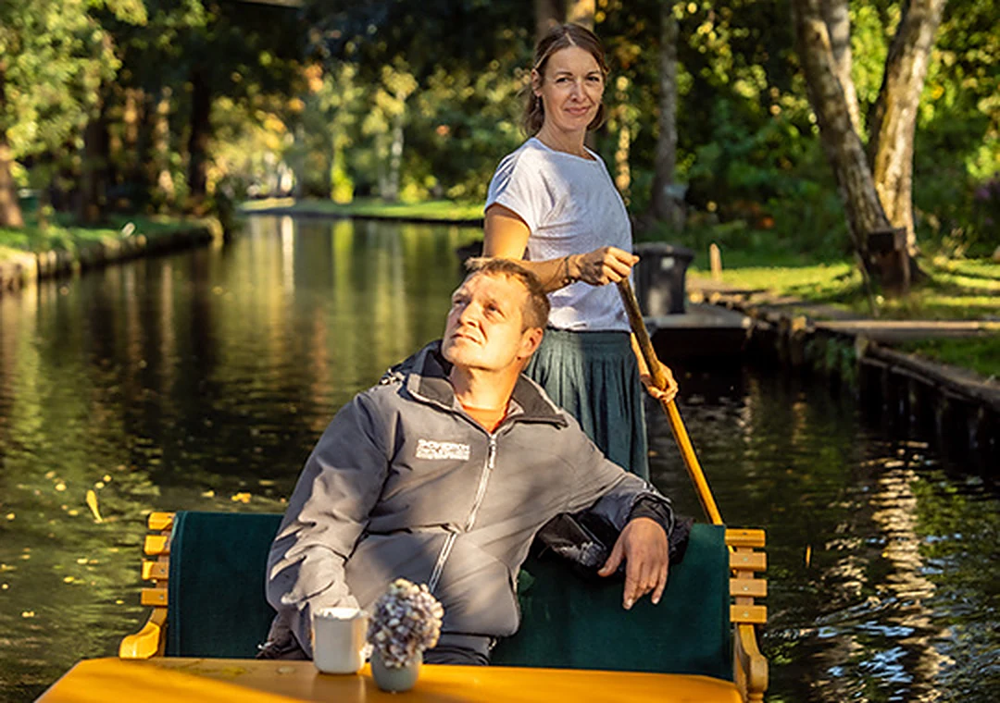
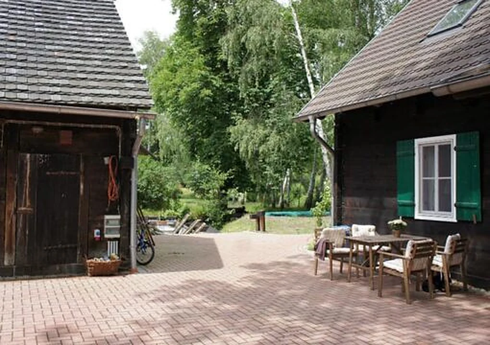
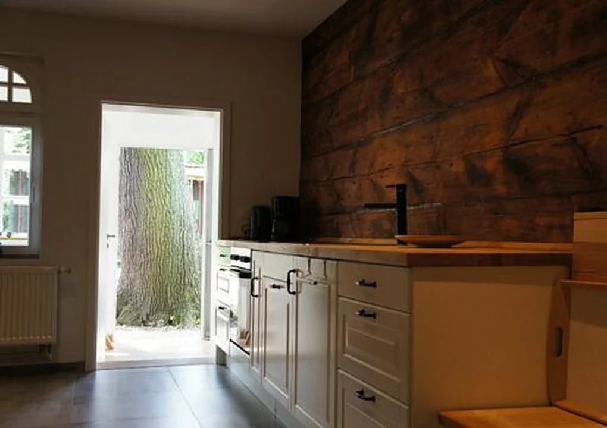
Ferienwohnungen
In unserem 1904 erbauten, denkmalgeschützen Blockbohlenhaus stehen zwei liebevoll eingerichtete Ferienwohnungen für Sie bereit.
Durch die Holzwände, die Lehmdämmung und den traditionellen doppelten Holzfenstern bleiben die Zimmer in heißen Sommertagen angenehm kühl und in den kalten Herbst- und Wintermonaten schnell kuschlig warm.
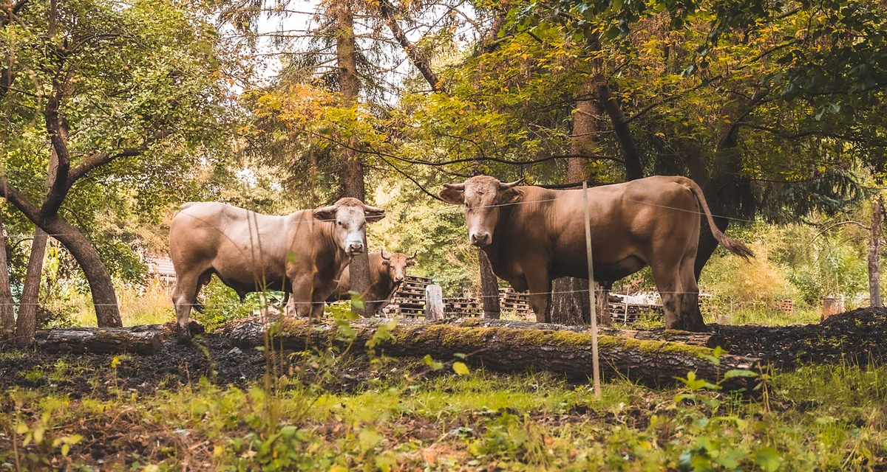
Unsere Tiere sind ein Teil des Hofes. Ohne all die Rinder, Schweine, Hühner, Katzen und unsere Hündin Wanda sowie Pfau Rex, wäre unsere Insel nicht das, was sie ist: ein Ort des Respekts, der Freude und der Verbundenheit.
Schlachterei
Im Jahr 2022 wurde das hofeigene Schlachthaus in Betrieb genommen, wo regelmäßig qualitativ hochwertiges Fleisch von unseren Rindern der Rasse Blonde d’Aquitaine in Direkt-Vermarktung angeboten wird.
Nächster Schlachttermin
Schlachttermine
Die Termine der Saison 2025/26 sind vorbei. Neue Termine werden hier ergänzt.
Schlachttermine Saison 2025/26: 25.10.2025 · 22.11.2025 · 24.01.2026 · 21.02.2026 · 21.03.2026
Freiwilliges ökologisches Jahr
Du möchtest Dich ausprobieren, neues Lernen und weg von der Schulbank? Dann bewirb Dich bei uns für ein freiwilliges ökologisches Jahr!
Mehr zum FÖJAnfahrt
Vom Parkplatz in Lehde holen wir Sie mit dem Kahn ab. Geben Sie in Ihr Navi „Lehde Café Venedig“ ein.
WegbeschreibungKontakt